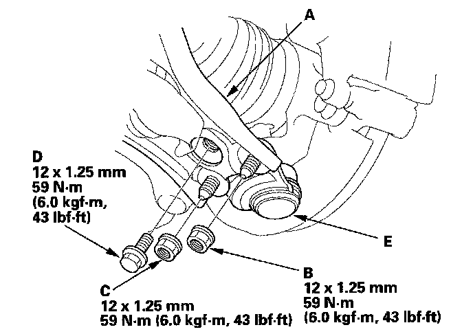
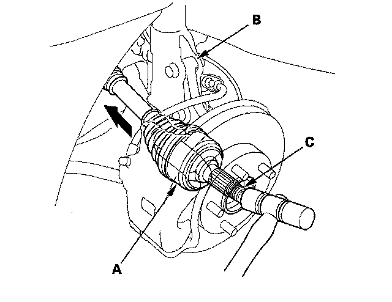
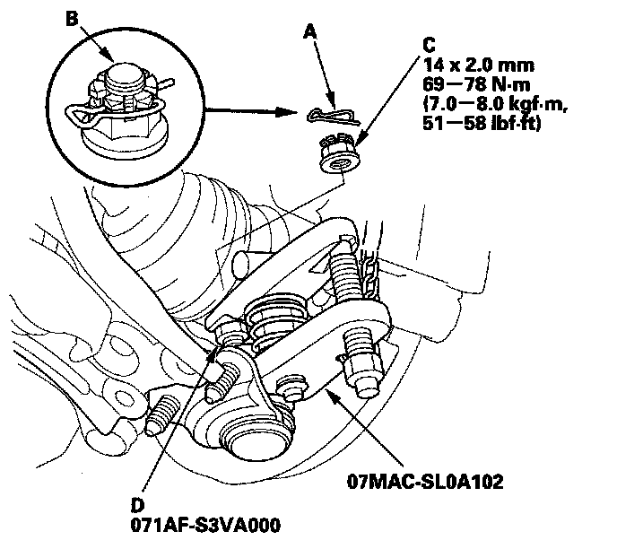

Lower Ball Joint Replacement
Lower Ball Joint ReplacementSpecial Tools Required
^ Ball joint remover, 32 mm 07MAC-SL0A102
^ Ball joint thread protector, 14 mm 071AF-S3VA000
1. Remove the front wheel.
2. Remove the flange bolt and flange nuts from the lower arm (A).
NOTE: During installation, install a new flange bolt and new flange nuts. After lightly tightening all three fasteners, tighten them to the specified torque in the following order; the nut on the front (B), the nut on the rear (C), then the bolt (D).

3. Disconnect the lower ball joint (E) from the lower arm.
4. Remove the spindle nut, and remove the outboard joint (A) from the knuckle (B) by tapping the driveshaft end (C) with a plastic hammer while drawing the hub outward.
NOTE:
^ Do not pull the driveshaft end outward. The inner driveshaft joint may come apart.
^ During installation, apply grease to the mating surface of the wheel bearing and driveshaft outboard joint.

5. Remove the lock pin (A) from the lower ball joint pin (B), then remove the castle nut (C).
NOTE: During installation, install a lock pin after tightening the new castle nut.

6. Install the ball joint thread protector (D).
7. Disconnect the lower ball joint from the knuckle using the ball joint remover, then remove the lower ball joint.
8. Install the lower ball joint in the reverse order of removal, and note these items:
^ First install all the components, and lightly tighten the bolts and nuts, then tighten the lower ball joint to the lower arm to the specified torque. Raise the suspension to load it with the vehicle's weight before fully tightening the lower ball joint to the knuckle to the specified torque values.
^ Tighten all mounting hardware to the specified torque values.
^ Use a new spindle nut during reassembly.
^ Before installing the wheel, clean the mating surface of the brake disc and inside of the wheel.
^ Check the wheel alignment, and adjust it if necessary.